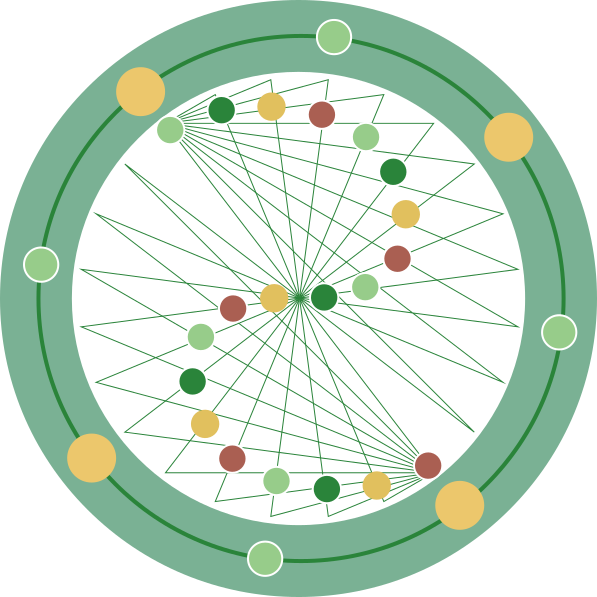

传统农耕节日的可视化研究

中国自古以农为本，以农立国，农耕文化是中国存在最为广泛的文化类型，是中国社会生产方式与生活秩序的基础。农耕文化是以农业生产为中心而形成的一种民俗文化，伴随农业生产活动形成的岁时节令、祭祀仪式与节庆习俗，在漫长历史发展过程中逐渐沉淀发展，形成了内容丰富、形态多样的农耕节日文化体系。传统农耕节日不仅记录了人们对季节更替、自然物候和农业生产规律的认识，也承载着祈福祭祀、凝聚族群和维系社会关系等多重文化功能，是中华优秀传统文化的重要组成部分。
中国地域辽阔、民族众多，不同自然环境、生产方式与民俗传统共同塑造了丰富多元的农耕节日系统。同一节日在不同地区呈现出不同的仪式形态，不同民族也在长期迁徙、交流与融合中形成具有地方特色的节俗内容。这种多样性使传统农耕节日具有较高的文化研究价值。
农耕节日的研究范围
中国传统农耕节日体系是在农耕文明基础上生成的，其形成发展经历了一个复杂而渐进的历史过程。经由不同历史阶段的拓展，传统节日逐渐发展为全民共享的文化体系，代代相承、连绵不绝。中国各农耕地区间地理环境各有所异，故各地农耕节庆各有特色；而农耕文化交流在各地普遍存在，故各地农耕节庆又有传承性与相似性。本次研究对象聚焦于其中与农耕农事所衍生出的相关节日与习俗，因此畜牧业、渔业、林业为主体的节日暂不在研究范围之内；国内各地还有不少由宗教发展而来的节日，其中部分与当地的农耕文化相关联的将会进行设计研究，其余部分也暂不在研究范围之中。
想象中的死亡之神


想象中的丰收之神


农耕诸神殿
这些符号可以在真实的农耕文化图像中找到，比如下面的137幅修复插图。
但是农耕神灵很少只与单一领域相关。相反，看似矛盾的领域，如生与死，往往体现在同一个神灵身上。
从农耕节日的自然背景角度来看，中国传统农耕节日的形成首先源于古代先民对自然节律的观察与顺应。在缺乏现代气象科学的古代，农业生产完全依赖于对自然变化、即农时的准确把握，正如《吕氏春秋·审时》所记载：“得时之稼兴，失时之稼约。”“不违农时”这一概念也成为社会共识。农时的重要性使得天文观测和物候记录成为农耕社会最重要的知识体系之一。早期人们通过所谓“土圭测影”的方式确定了夏至与冬至两大节气；成书汉代的《淮南子·天文训》与《礼记·月令》分别对天文与物侯进行了一系列定义，前者详细记录了二十四节气相关内容，后者记载表述了节气文化对社会秩序与生活用度的影响，并规定了生产与祭祀所需遵循的仪式，促成了对自然规律的总结转向仪式与节庆。
农耕节日的形成与演变不仅受自然环境影响，更与农耕社会的组织结构和文化心理需求密切相关。彭金山指出，农耕文化的内涵概括为应时、取宜、守则、和谐四个概念“应时”更多对应农耕与自然农时的关系，取宜、守则、和谐则体现在哲学思想层面居多。这些概念在农耕节日中有充分体现。
书籍著作
- 国家民委《民族问题五种丛书》[M]. 2005
- 张晓华《中国传统节日文化研究》[M]. 中国青年出版社, 2007
- 黄泽《西南民族节日文化》[M]. 云南大学出版社, 2012
- 申士垚, 傅美琳《中国风俗大辞典》[M]. 中国和平出版社, 1991
- [清] 顾禄《清嘉录》[M]. 江苏古籍出版社, 1999
- 吕不韦. 《吕氏春秋》[M]. 北京: 中华书局, 2022.
- 刘安. 《淮南子》[M]. 北京: 中华书局, 2023.
- 戴圣. 《礼记》[M]. 北京: 中华书局, 2022.
- 萧放. 传统节日: 一宗重大的民族文化遗产[J]. 民族遗产, 2008, (00): 79-87.
- 王丹. 传统节日研究的三个维度——基于文化记忆理论的视角[J]. 中国人民大学学报, 2020, 34(01): 164-172.
相关网站
中国非物质文化遗产网·中国非物质文化遗产数字博物馆（www.ihchina.cn/）
贵州省非物质文化遗产保护中心（www.gzfwz.org.cn）
云南非物质文化遗产保护网（www.ynich.cn）
广西非物质文化遗产网（www.gxfybhw.cn）
其它各省级非物质文化遗产网站